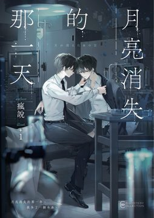

最唯美的雙生羈絆╳最難割捨的近未來科幻懸疑 ——「哥哥，只要是你所期望的，我都會替你實現。」 ◤內容簡介◢ 月亮消失的那一天，爸爸捲款潛逃，從此消失匿跡。 但海利和媽媽都深信爸爸的清白，兩人在家守候，盼望哪天能洗刷冤屈，全家團圓。 某日海利睡醒，屋裡卻哪裡也找不到媽媽，桌上只留下一張紙條⋯⋯ 「小海，媽媽出去一下。要乖乖在家裡等喔，很快就回來接你。」 一個禮拜過去，再次開啟他家大門的不是媽媽，而是和他有著相同臉孔的男孩。 「快走，大人要來了。」 男孩對他說，拉著他鑽進小巷；於城市的縫隙，偷偷摸摸地，靠偷竊與打工苟延殘喘。 困苦的生活日復一日，希望愈加渺茫，海利依然不曾放棄尋找失聯的媽媽，和逃亡中的爸爸。 多年過去，當年事件的真兇落網，爸爸得到遲來多年的清白，出面向社會聲明，且創立新公司重振旗鼓。 海利同時聽聞，媽媽的蹤跡似乎也有了下落。然而，他卻無法以親兒子的身分，與家人重聚。 「是誰，偷走了他的家？」 從【月亮消失的那天】起，他的人生變得一團混亂。 除了在這世上，最為親密的雙胞胎弟弟月海，好像誰也不可信⋯⋯ ◤本書看點◢ 近未來的城市裡，海利家的衣服、鞋子、餐具都備兩份，他一直當那是媽媽的購物怪癖。十四歲那年父母失蹤，一個長得和他一模一樣的男孩找上門，自稱雙胞胎弟弟月海，那些多出來的衣物才有了主人。 月海老是一臉正經，說來說去總是「不行，不可以，很危險」，帶著哥哥躲進空屋、鑽過窄巷，替他找到一間麵包店落腳。每天早上，月海都坐在床邊盯著哥哥看，道一聲「哥哥，早。」遇到麻煩，出面的總是月海。 十八歲生日，弟弟音訊全無，海利每天醒來都在等那句「哥哥，早」。後來弟弟那張臉出現在電視新聞裡：失蹤四年的爸爸重新站到鏡頭前，身邊那個被稱作海利的兒子，是月海。兄弟兩人說好等全家團聚要一起回家，被留下的卻是海利。 ——2024 KadoKado百萬小說創作大賞．奇幻小說組首獎，風說的裏人格瘋說推出最新華文原創長篇小說，結合近未來科幻與懸疑犯罪，從一對雙胞胎兄弟從失散重逢到身分遭頂替的經過展開，故事時間約在二〇五〇年前後，機器人正逐步走進日常生活，焦點在於兄弟兩人如何面對家人失蹤、街頭藏身、暗網懸賞與潛入大企業總部的奇幻冒險。 ◤感動推薦◢ 八千子（作家） ——「一個自稱沒有心的弟弟，做著能和哥哥一起回家的夢。」 A.Z.（作家） ——「雖說故事充滿了寓言感，但我們都清楚，在現在的科技之下，這些都不再是寓言」 賴特（作家） ——「弟弟算不算一個完整的人無關緊要，只要他是那個弟弟就夠了。」